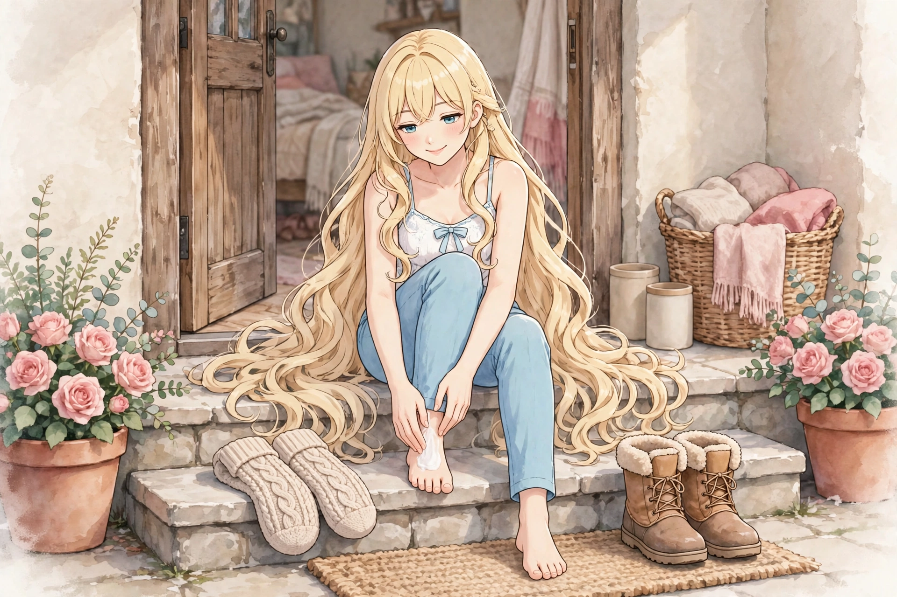

トップ ＞ ボディケア ＞ 冬のブーツの日：足のケアと靴下選び
冬のブーツの日：足のケアと靴下選び

冬のブーツは暖かい反面、一日履くと足の蒸れが気になります。施術で足に触れる機会の多い仕事柄、この季節は足の話題が増えます。この記事では、履く前から帰宅後までの、足のケアと靴下の選び方を整理します。
履く前の準備：足を乾かしてから
基本は、足を清潔にし、よく乾かしてから靴下を履くことです。朝の支度で急いでいても、足指の間まで乾かしてから履くと、一日の快適さが変わります。クリームを塗る場合は、べたつきが残らない量に調整し、乾いてから靴下を履く順番にします。
長時間履く日は、替えの靴下を持っていく方法もあります。昼休みに履き替えるだけで、午後の蒸れ感はかなり違います。
靴下は、素材と厚みで選ぶ
靴下は、汗を吸う素材かどうかと、ブーツの中で足が滑らない厚みかどうかが確認点です。厚すぎると靴の中で窮屈になり、薄すぎると冷えます。ブーツの形（丈の長さ）に合わせて、靴下の丈もそろえます。
足指の形が分かれているタイプや、滑り止めのあるタイプなど、形の選択肢もあります。自分の足の形と、履く場面で選ぶのが基本です。
帰宅後は、蒸れをリセットする
帰宅したら、ブーツと靴下を早めに脱ぎ、足に風を通します。その日のうちに足を洗い、よく乾かしてから、必要に応じてクリームでケアします。足のケアの手順は、このサイトの足裏・足指の記事でも紹介しています。
ブーツ自体も、脱いだ後に内側を乾かしてからしまうのが基本です。湿ったまま下駄箱に入れず、風通しのよい場所で乾かす時間を取ると、次に履くときの状態が保てます。
ブーツを履く頻度にも目を向けます。同じブーツを毎日履き続けると、内側が乾く時間が取れません。2足を替えて履くなど、休ませる日を作ることが、ブーツと足の両方の管理になります。中の敷き物（インソール）を取り外せるタイプは、外して乾かすと乾燥が進みます。足側の手入れとしては、爪の長さを整えておくことも、靴の中で当たりやすい足指の負担を減らす日常の備えです。季節の終わりにしまう前には、内側までよく乾かし、形を保つ詰め物をして保管します。冬の足まわりは、履く日だけでなく、休ませる日としまう日の管理まで含めた、季節単位の設計です。足のケアは、顔や手に比べて後回しになりやすい部位です。ブーツの季節は、履く・脱ぐという明確な区切りがある分、ケアのタイミングを習慣に結びつけやすい時期でもあります。脱いだら洗う、乾かしたらクリーム、という短い型を決めておくのがおすすめです。型が決まれば、忙しい日でも足まわりの手順はぶれません。

セラフィナ「ブーツの日は、乾かしてから履く、脱いだら乾かす。靴下は素材と厚みで選ぼう」